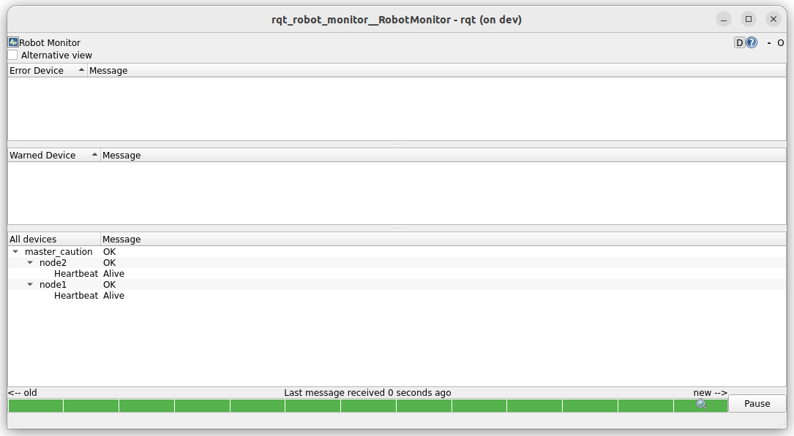
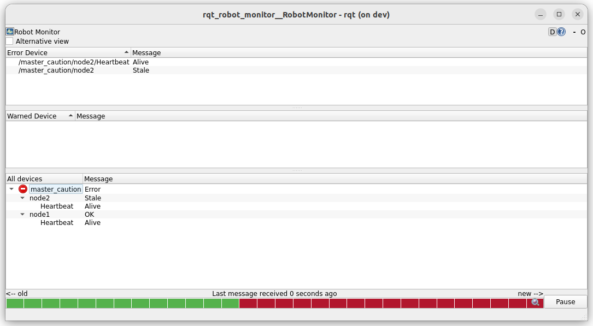

Diagnostic aggregator
The Diagnostic Aggregator in ROS 2 is a tool designed to organize and categorize diagnostic messages efficiently.
It helps in monitoring system health by grouping diagnostic messages into a structured hierarchy,
making it easier to analyze the status of different components. it's subscribe to /diagnostic topic and publish to /diagnostic_agg topic.
The aggregator make use of Analyzers, The analyzer are plugins that define how diagnostic data is processed, categorized, and reported.
Analyzer
An analyzer processes incoming diagnostic messages, organizes them into a hierarchical structure, and generates processed diagnostic output. Each analyzer is responsible for:
- Matching: Determining which diagnostic messages it should process based on their names or other criteria.
- Analyzing: Processing the matched messages (e.g., checking for errors, staleness, or specific conditions).
- Reporting: Producing a structured output, typically as a vector of diagnostic_msgs/DiagnosticStatus messages, with a defined hierarchy.
Analyzers are loaded dynamically by the aggregator_node at runtime using the pluginlib framework, and their behavior is configured via parameters (usually specified in a YAML file).
The Aggregator came with few predefine analyzers
- GenericAnalyzer
- AnalyzerGroup
- DiscardAnalyzer
AnalyzerGroup
This analyzer acts as a container for other analyzers, enabling hierarchical grouping of diagnostic data. It doesn’t process data itself but delegates to its "sub-analyzers."
TODO: create yaml example and demo
GenericAnalyzer
Matches diagnostic messages based on criteria
- path: Defines the category name in the aggregated output.
- startswith: Groups diagnostics messages that start with a certain prefix.
- expected: Lists expected diagnostic topics (useful for error checking).
- contains: Groups messages that contain a specific word.
- timeout: Monitors staleness (e.g., if a message hasn’t been updated within a timeout period, it’s marked as stale). #TODO: create example
expected
The expected parameter in the aggregator checks for the presence of specific name values inside the messages published to /diagnostics.
stale
In diagnostic_aggregator, stale severity is the severity level assigned to a diagnostic status when a message is not received within the configured timeout. This helps in detecting missing diagnostics.
Demo: Stale HB message
- Run node with heartbeat diagnostic
- Run Aggregator
- Run Monitor
- When stop the heartbeat , the aggregator alert on staled message
heartbeat node
| terminal1: heartbeat node1 | |
|---|---|
| terminal2: heartbeat node2 | |
|---|---|
| terminal3: diagnostics aggregator | |
|---|---|
| terminal4: monitor | |
|---|---|
downaload tmuxp script to run all above terminals
Aggregator config

-
Node 1 stop running

-
Node 2 stop running 
Demo: Ignore messages
- Use to heartbeat from previous demo
- Run with new configuration
- Echo topic
diagnostics_agg
config
usage
Download tmuxp script to run the demo

empty diagnostic_agg topic